| ・ シュリーレン法 (R02.07.01) | |||
工業計測法でシュリーレン法を紹介するために廊下でやってみました。原理に則って設置されないと可視化できないのでいろいろと調整です。最後に准教授の人がそれっぽい音源を作って科学動画にしました。 |
|||
|
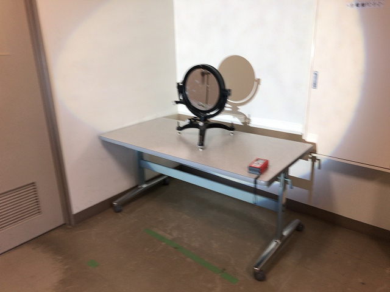
計測研に古くから伝わる鏡 |
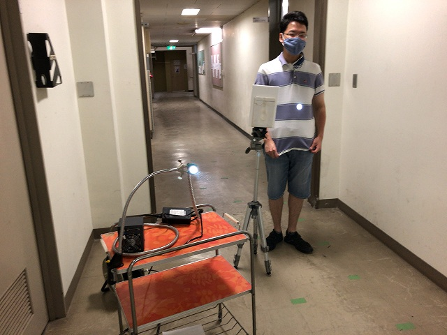
M4に投影 | ||
|
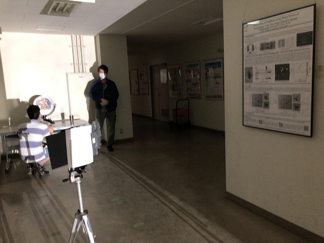
並行光が大事 |
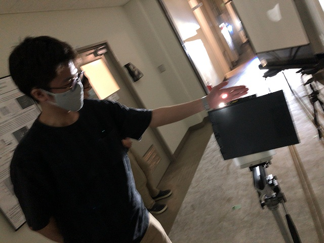
ナイフエッジ | ||
|
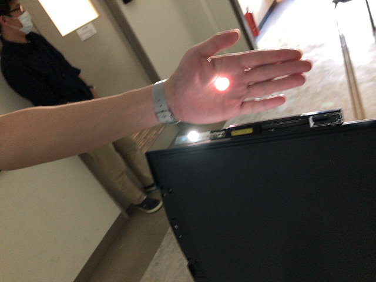
カミソリないのでカッターナイフ |
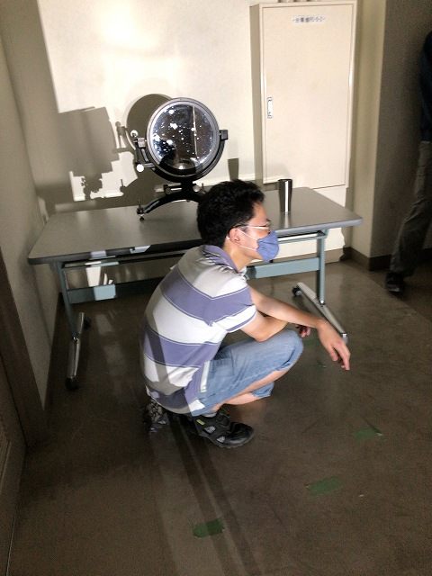
M4スタンバイ | ||
|
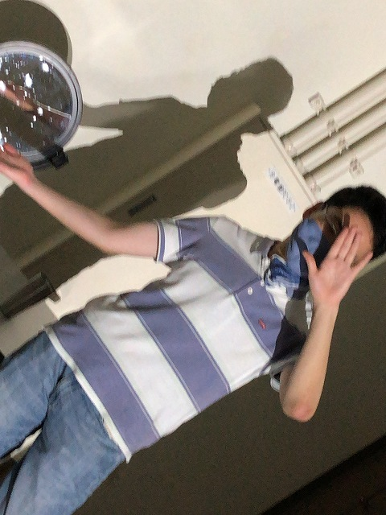
ジョジョ立ち |
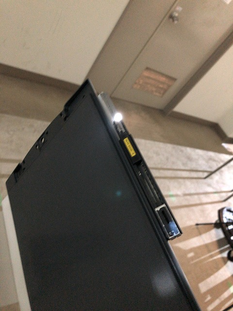
結構攻めないとダメ | ||
|
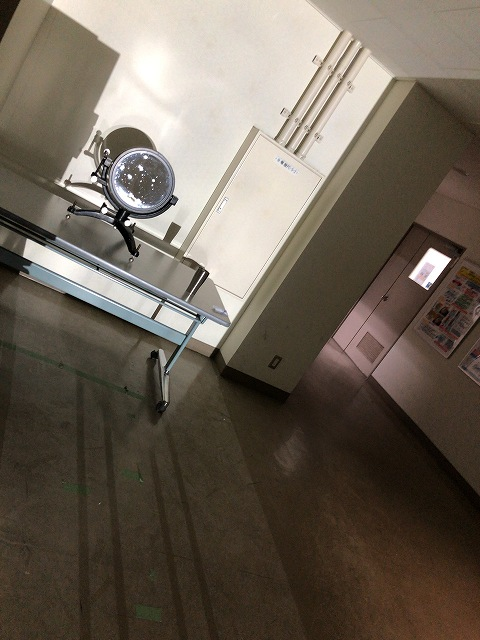
鏡の焦点が6 m |
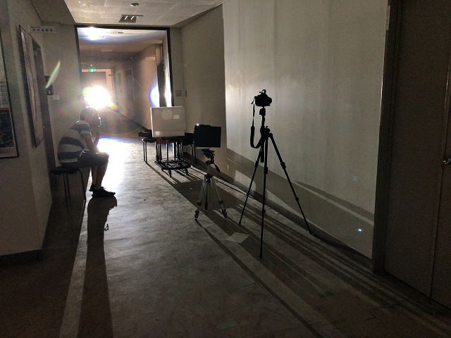
光源はロボティクスの学部部屋前に設置 | ||
|
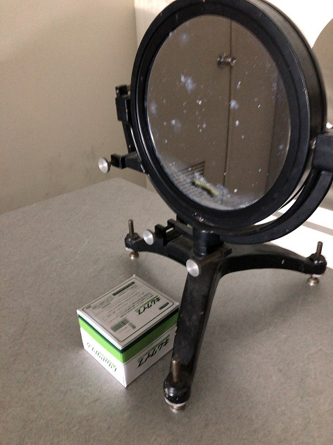
ここに |
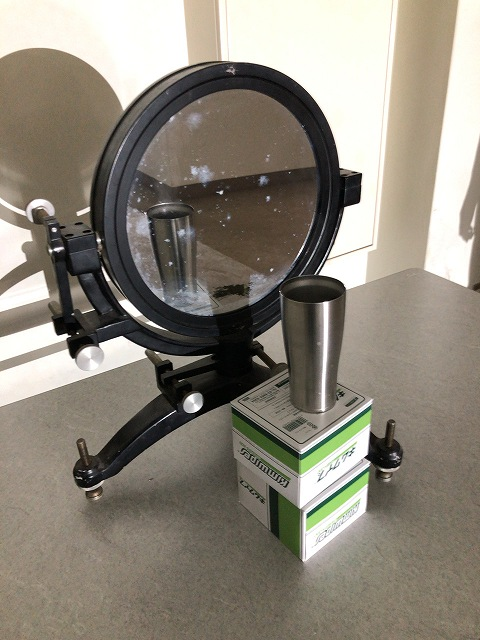
お湯入れたカップ | ||
|
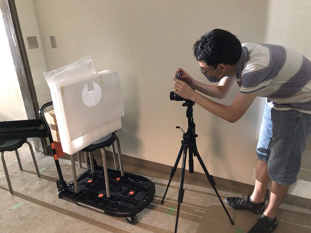
スマホで撮影 |
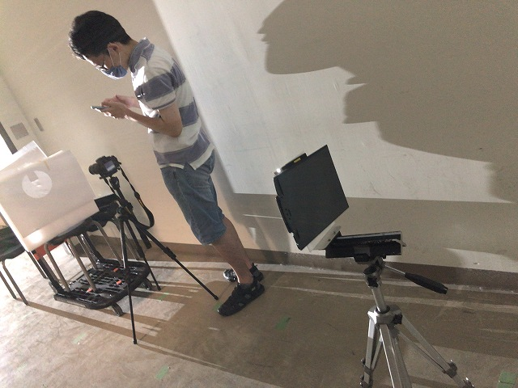
結構いい | ||
|
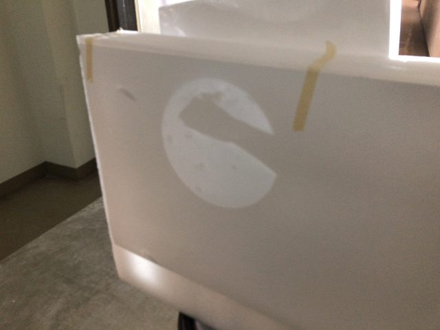
手からなんか出てる |
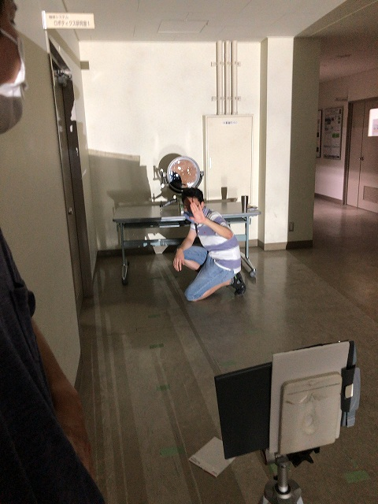
まぶしい | ||
|
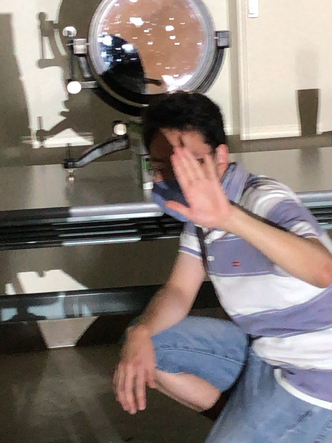
タンマ |
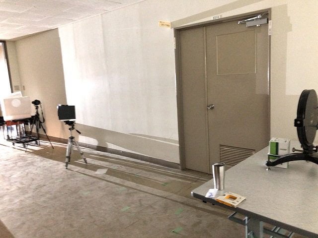
床は西側工事の粉塵でしろい | ||
|
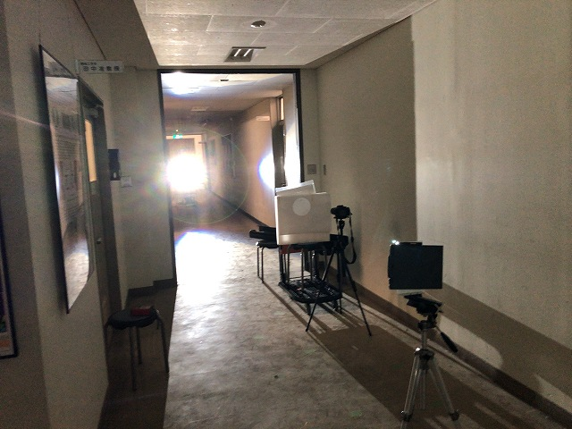
さて |
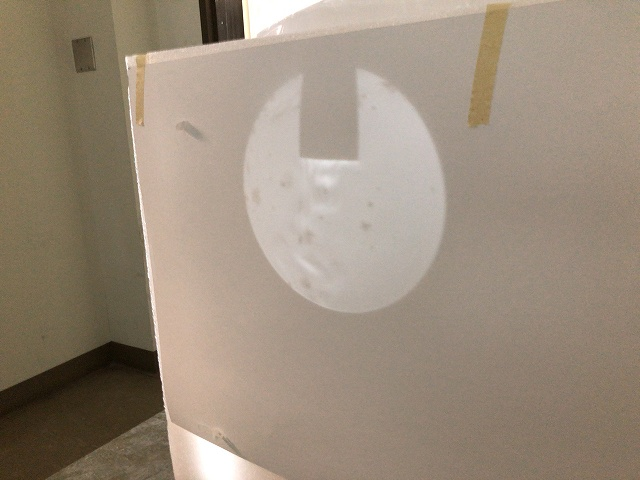
ナイフエッジあり | ||
|
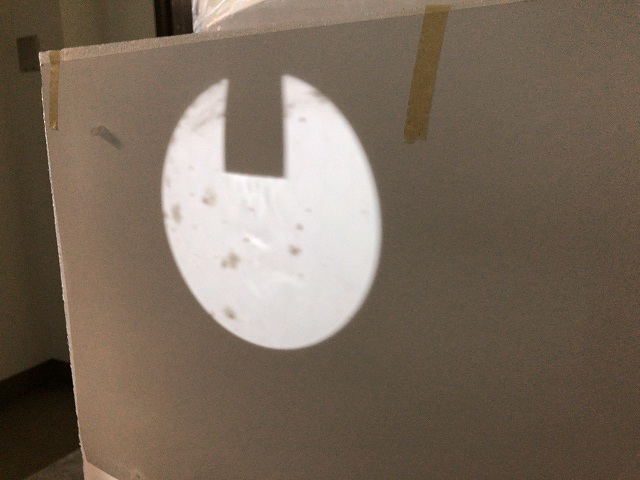
なし |
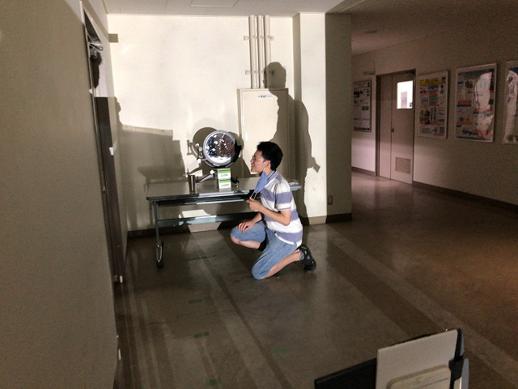
マスクの効果 | ||
|
謎音楽付き科学動画完成 |
|||